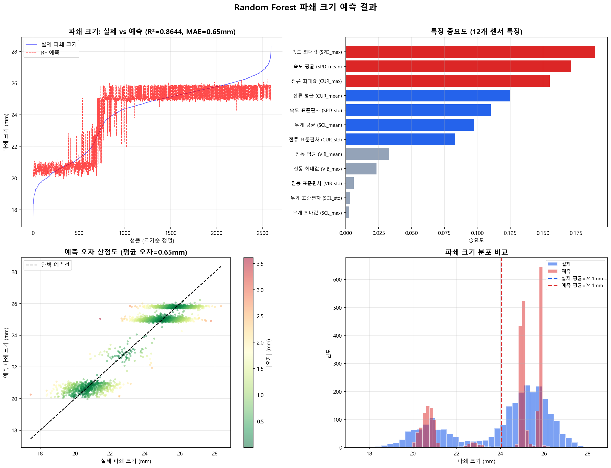

Random Forest 파쇄 크기 예측 상세 설명
앙상블 학습으로 파쇄 크기(mm)와 균일도(%)를 정밀 예측하고, 핵심 센서를 파악합니다
0 Random Forest란?
한 명의 전문가(Decision Tree)에게 물어보면 틀릴 수 있습니다. 하지만 200명의 독립적인 전문가에게 각각 물어본 뒤 평균을 내면? 개인의 실수가 상쇄되어 훨씬 정확해집니다.
이것이 바로 Random Forest입니다: 여러 Decision Tree를 만들고, 결과를 평균내는 앙상블(Ensemble) 기법입니다.
- Bagging (Bootstrap Aggregating): 원본 데이터에서 복원 추출로 여러 부분집합을 만들어 각 트리에 독립 학습
- Random Feature Selection: 각 분기(split)마다 전체 특징 중 일부만 무작위 선택하여 트리 다양성 확보
- Averaging: 모든 트리의 예측값을 평균 (회귀) 또는 다수결 투표 (분류)
n_estimators
4센서 x 3통계
파쇄 크기 + 균일도
1 특징 추출 - 12개 센서 특징
슈레더에 설치된 4종 센서에서 각 3개 통계값을 추출하여 총 12개 특징을 구성합니다.
| 센서 | 설명 | 평균 (mean) | 표준편차 (std) | 최대값 (max) |
|---|---|---|---|---|
| CUR | 모터 전류 (A) | CUR_mean | CUR_std | CUR_max |
| SPD | 회전 속도 (RPM) | SPD_mean | SPD_std | SPD_max |
| VIB | 진동 RMS (mm/s) | VIB_mean | VIB_std | VIB_max |
| SCL | 스케일/무게 (kg) | SCL_mean | SCL_std | SCL_max |
파쇄 크기는 단일 센서로 결정되지 않습니다. 전류(힘), 속도(회전력), 진동(안정성), 무게(투입량)가 복합적으로 작용합니다. 각 센서의 평균/편차/최대값은 서로 다른 물리적 의미를 가집니다.
2 알고리즘 원리
Step 1: Bootstrap Sampling (복원 추출)
Step 2: Random Feature Selection (무작위 특징 선택)
Step 3: Averaging (평균 투표)
3 Decision Tree vs Random Forest 비교
| 항목 | Decision Tree (단일 트리) | Random Forest (앙상블) |
|---|---|---|
| 트리 수 | 1개 | 200개 |
| 학습 데이터 | 전체 데이터 1벌 | Bootstrap 샘플 200벌 |
| 특징 선택 | 매 분기마다 전체 특징 | 매 분기마다 sqrt(n) 무작위 |
| 과적합 | 쉽게 과적합 (학습 데이터 암기) | 강건 (Bagging이 분산 감소) |
| 정확도 | 보통 | 높음 (앙상블 효과) |
| 해석성 | 매우 높음 (트리 시각화 가능) | 중간 (특징 중요도로 해석) |
| 속도 | 매우 빠름 | 트리 수에 비례 (병렬 가능) |
| 모델 크기 | 극소 | 트리 수 x 단일 트리 |
4 파쇄 크기 예측 & 균일도 계산
파쇄 크기 결정 요인
- 전류(CUR) 높음 → 칼날에 가해지는 힘 증가 → 파쇄 크기 감소
- 속도(SPD) 높음 → 회전 빈도 증가 → 파쇄 크기 감소
- 진동(VIB) 높음 → 불규칙 운전 → 파쇄 크기 불균일
- 무게(SCL) 높음 → 투입량 과다 → 파쇄 크기 증가
균일도 계산
5 시뮬레이션 결과 분석
실제 vs 예측 파쇄 크기

파란 실선 = 실제 파쇄 크기(mm) / 빨간 점선 = Random Forest 예측
두 선이 겹칠수록 예측이 정확합니다. R²가 1에 가까울수록 모델이 데이터 패턴을 잘 학습한 것입니다.
특징 중요도 (Feature Importance)
12개 특징의 중요도 순위를 막대 그래프로 보여줍니다.
빨간 막대 = 높은 중요도, 파란 막대 = 중간, 회색 = 낮은 중요도. Random Forest는 각 특징이 분기(split)에 사용될 때의 불순도 감소량을 합산하여 중요도를 계산합니다.
예측 오차 산점도 (Scatter Plot)
X축 = 실제 값, Y축 = 예측 값. 검은 대각선(완벽 예측선) 위에 점이 모이면 예측이 정확합니다.
점의 색상이 빨갈수록 오차가 크고, 녹색에 가까울수록 오차가 작습니다. 대각선에서 멀리 떨어진 점은 모델이 틀린 케이스입니다.
파쇄 크기 분포 히스토그램
파란 막대 = 실제 분포 / 빨간 막대 = 예측 분포. 두 분포가 겹칠수록 모델이 전체 분포를 잘 학습한 것입니다.
점선은 각각의 평균을 나타냅니다. 실제 평균과 예측 평균이 가까울수록 편향(bias)이 적습니다.
6 알고리즘 특징 / 장점 / 단점
핵심 특징
- Bagging 앙상블: Bootstrap 복원 추출로 200개의 독립적인 학습 데이터셋을 생성. 각 트리는 원본의 약 63.2%만 보고 학습하여 과적합 방지
- 병렬 트리 (Parallel Trees): 각 트리가 독립적이므로 병렬 학습/추론 가능 (n_jobs=-1). Gradient Boosting과 달리 순차적이지 않음
- 평균 투표 (Averaging): 회귀 문제에서 200개 트리의 예측값을 평균내어 개별 트리의 분산(variance)을 효과적으로 감소
장점
- 비선형 관계 학습: 센서 간 복잡한 상호작용을 트리 구조로 자연스럽게 포착
- Feature Importance: "어떤 센서가 파쇄 크기에 가장 중요한가"를 수치로 제시 → 현장 운영 가이드
- 과적합 강건: Bagging + Random Feature Selection으로 단일 트리 대비 과적합 크게 감소
- 전처리 최소: 정규화/표준화 불필요, 결측치에 상대적으로 강건
- OOB Score: 별도 검증셋 없이도 Out-of-Bag 데이터로 성능 추정 가능
단점
- 큰 모델 크기: 200개 트리를 모두 저장해야 하므로 단일 트리보다 약 200배 메모리 소요
- 단일 트리보다 느림: 추론 시 200개 트리를 모두 순회해야 하므로 단일 Decision Tree보다 느림
- 선형 모델보다 해석 어려움: 개별 트리 시각화는 가능하지만, 200개 트리의 종합 판단 과정을 설명하기 어려움
- 외삽(Extrapolation) 불가: 학습 데이터 범위를 벗어난 값 예측 불가 (트리의 한계)
- Gradient Boosting 대비: 동일 조건에서 GBM/XGBoost보다 정확도가 약간 낮을 수 있음
| 비교 항목 | Linear Regression | Decision Tree | Random Forest | XGBoost |
|---|---|---|---|---|
| 앙상블 | 아니오 | 아니오 | Bagging | Boosting |
| 트리 관계 | - | 1개 | 독립 (병렬) | 순차 (직렬) |
| 비선형 | 불가 | 가능 | 가능 | 가능 |
| 과적합 방지 | 높음 | 약함 | 강함 | 중간 |
| 속도 | 매우 빠름 | 매우 빠름 | 보통 (병렬 가능) | 느림 (순차) |
| 해석성 | 매우 높음 | 매우 높음 | 중간 (Importance) | 중간 |
7 슈레더 적용 시나리오
10분마다 CUR, SPD, VIB, SCL 센서에서 12개 특징을 추출하여 Random Forest에 입력. 예측된 파쇄 크기가 목표 범위(20~30mm)를 벗어나면 자동으로 RPM 또는 투입량을 조절합니다.
Feature Importance를 통해 "왜 파쇄 크기가 커졌는가"를 파악: 진동이 원인이면 칼날 점검, 무게가 원인이면 투입량 조절.
Feature Importance 분석 결과, 진동(VIB_mean)이 파쇄 크기의 가장 큰 결정 요인임을 발견했다면:
- 진동 감소를 위한 칼날 교체 주기 단축
- 진동이 낮은 최적 RPM 범위를 Random Forest로 탐색
- 투입량(SCL)과 진동의 관계를 분석하여 최적 투입량 결정
- A등급 (균일도 90% 이상): 고부가가치 재활용 원료로 출하
- B등급 (균일도 75~90%): 일반 재활용 원료
- C등급 (균일도 75% 미만): 재파쇄 필요 → 자동 재투입
Random Forest가 균일도를 실시간 예측하여 자동 품질 등급 분류를 수행합니다.
n_estimators
4센서 x 3통계
실시간 모니터링
- 비선형 관계: 전류/속도/진동/무게와 파쇄 크기의 복잡한 관계를 트리 구조로 자연스럽게 모델링
- Feature Importance: "왜 파쇄 크기가 변했는가"를 센서 단위로 설명 가능 → 현장 의사결정 지원
- 강건성: 센서 노이즈, 결측치에 상대적으로 강건하여 실제 공장 환경에 적합
- 병렬 추론: n_jobs=-1로 모든 CPU 코어 활용 → Edge 장비에서도 빠른 예측